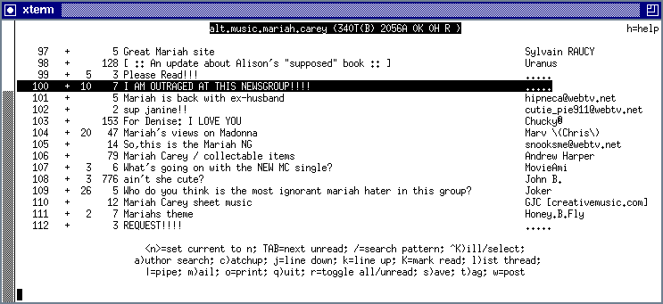
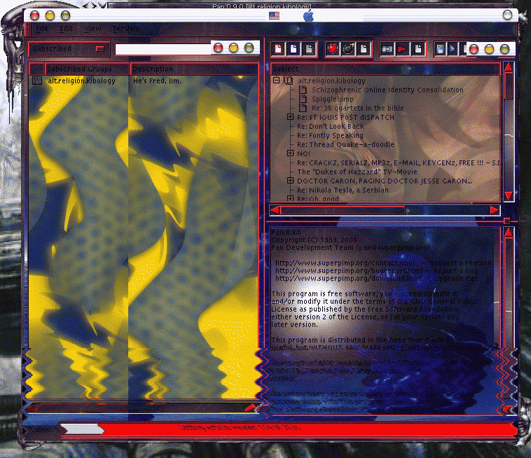

|
A console-based newsreader.
Is it tin?
It's hard to say. You could read news with this -- yawn -- if you could stay awake long enough. |
 |
|
YOU WANT COOL?
Thanks to Pan's cool new xml-based theme manager, we're drooling coolness! This new default Pan theme was submitted by no less than Bowie Poag and Rasterman. Hey, you got your Enlightenment in my Propaganda! NO, you got your Propaganda in my Enlightenment!!! Note the ever-popular rippling waves special effects at the bottom of Pan. If we'd made this an animated gif, or a Java applet, you could watch it ripple. You'll just have to wait for the next version of Pan. Check out pan.themes.org for more cool Pan themes. (Not open for business yet.) |
 |